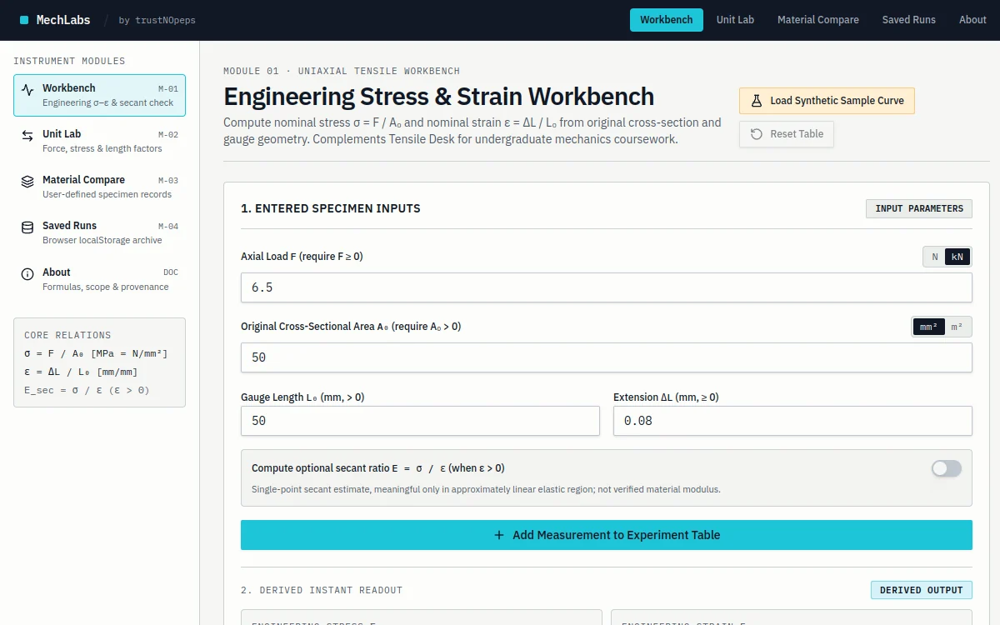
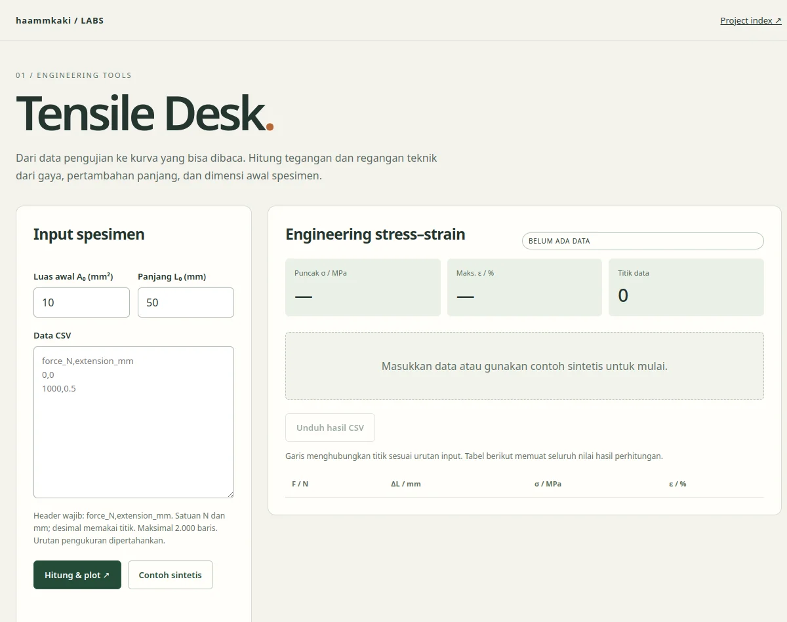
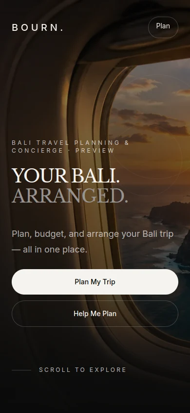
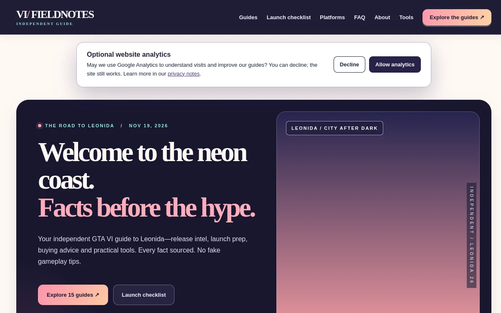
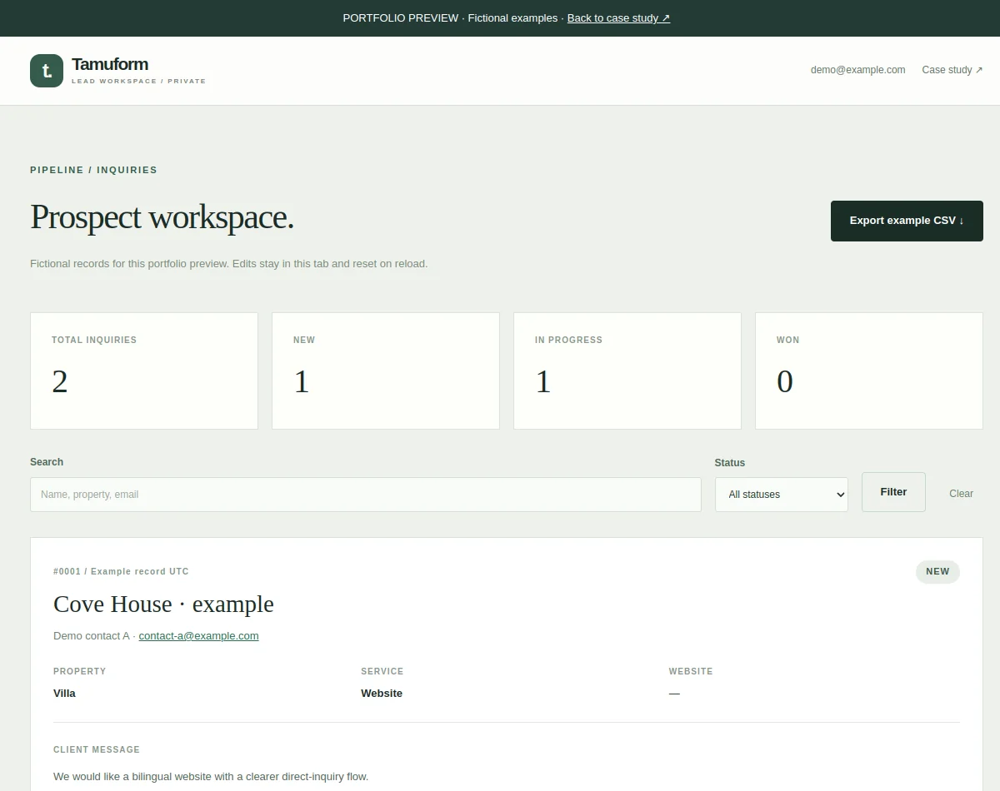
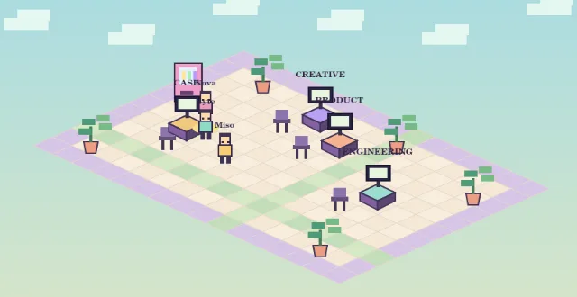
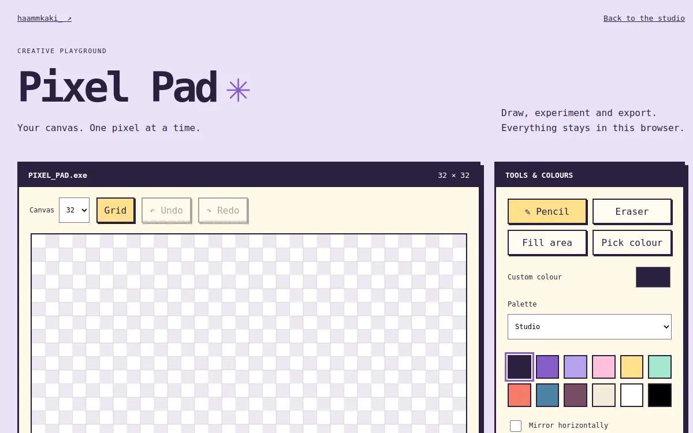
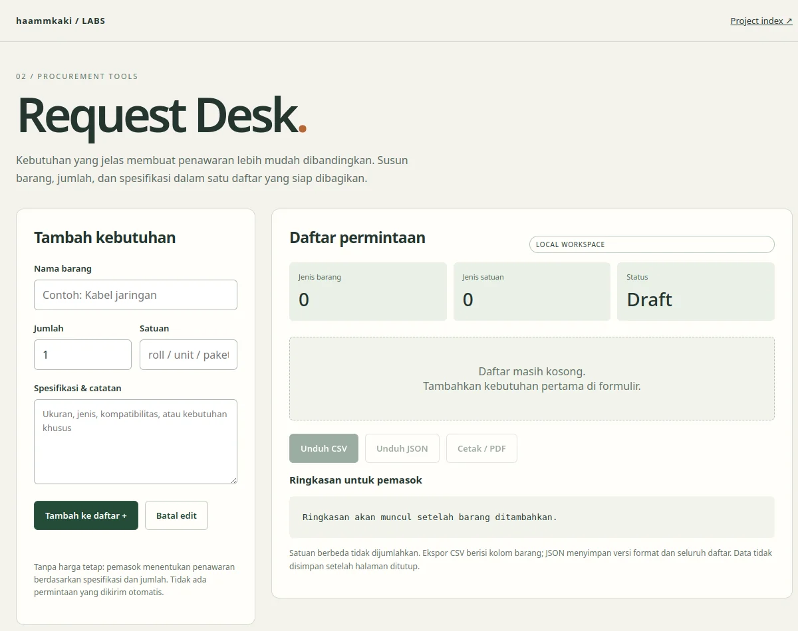
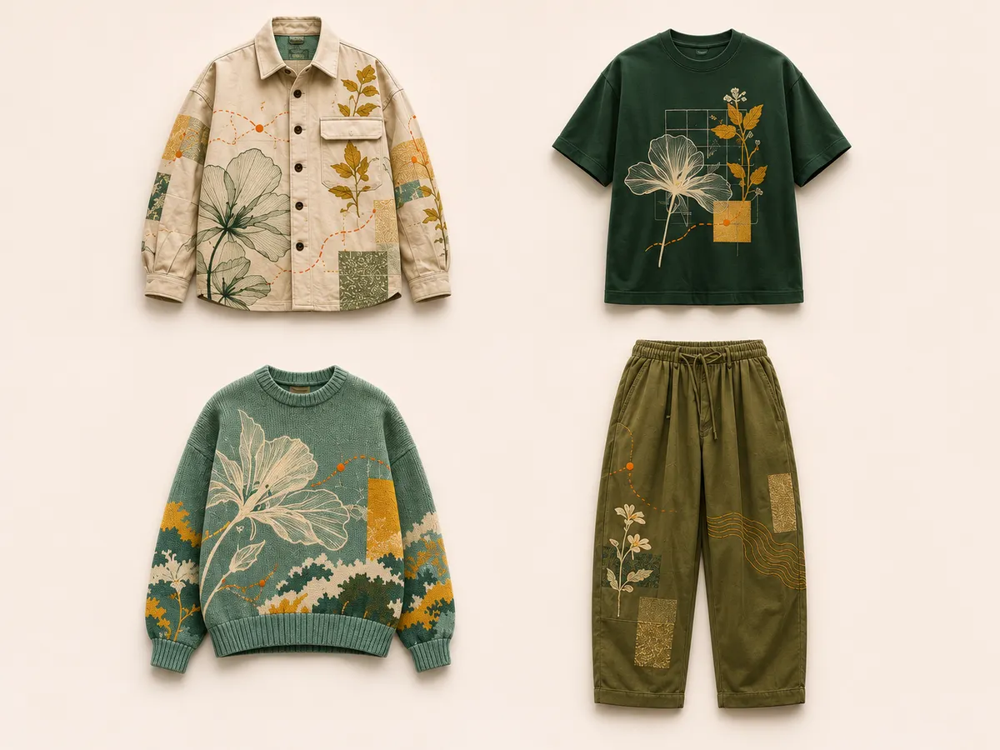

ENGINEERING / REACT + TYPESCRIPT
MechLabs
A learning workbench for stress–strain, unit conversion, comparison and browser-local records. Not certified engineering software.
Independent practice · Bali, Indonesia
haammkaki.Mechanical engineering student / multidisciplinary maker
I study mechanical engineering and build things beyond the classroom: practical browser tools, small interactive worlds, and independent creative concepts. Each project is a work in progress, with the methods and limitations made visible.
Mechanical engineering is my foundation. These tools and experiments focus on calculations, measured inputs and the limits of what a simulation can prove.

A learning workbench for stress–strain, unit conversion, comparison and browser-local records. Not certified engineering software.

Turns force and extension inputs into engineering stress–strain values, plots and CSV exports. Sample data are synthetic.
Documented ultrasonic sensor and servo simulation, example Arduino sketch and Tinkercad workflow notes. No physical validation claimed.
Small browser applications are my way of learning interaction design. They start with a simple question and become something you can actually click.

A Bali travel planning and concierge prototype. Shape a trip, explore an illustrative budget and download a personal brief. Originally developed as PERON.

An independent GTA VI guide publication with searchable articles, a storage calculator and a saved launch checklist. Built with HTML, CSS and JavaScript.

A bilingual hospitality website and inquiry workspace. Explore the product case study and a fictional CRM walkthrough.


A spacious pixel art editor with drawing tools, palettes, undo, project files and PNG export.

Visual identity, editorial thinking and writing also belong in the process. These are creative projects, each with its current status stated plainly.

Ten original clothing collections, presented as an editorial brand archive with a virtual campaign model and packaging studies. Concepts, not yet for sale.
EXPLORE THE PROJECT ↗An Indonesian nonfiction book in development. Only the public preview is shown.
EXPLORE THE PROJECT ↗Information architecture, content structure and design systems. These are anonymized studies or pitches, not claims of delivered client websites.
Organizing specifications and quotation requests without assuming fixed prices.
A company-first presentation with projects arranged as a clear catalogue.
A bilingual venue concept built around atmosphere, menus and visiting information.
I'm a mechanical engineering undergraduate at Universitas Udayana, based in Bali. My interests cross research, product thinking, UI/UX and software. Building and testing small projects is how I learn.
I'm interested in learning with others, making useful digital tools and exploring the space between engineering and creative work.
GITHUB ISSUES ARE PUBLIC. PLEASE DO NOT SHARE CONFIDENTIAL INFORMATION.
BALI, INDONESIA · 2026